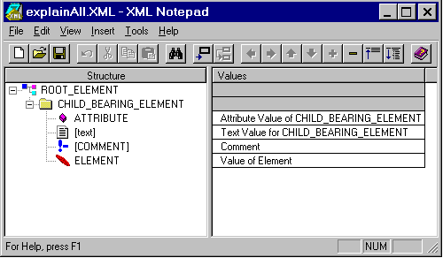

| ||||||
Beta 1.5
May 15, 1999
Once you've installed Microsoft® XML Notepad (see Downloading XML Notepad), you can open it through the Windows® Start menu. The XML Notepad window looks like this:

XML Notepad's user interface is simple and intuitive. The XML source is represented graphically. The topmost element is the document element. Every XML file can have only one document element. Elements are represented by either folder icons, if they have dependent structures (for example, attributes or other elements), or by leaf icons if they have no substructures. Attributes are represented by 3-D blocks while text and comments are represented by text icons and exclamation mark icons, respectively. The structure of the data is represented in the left column while the values of the nodes are displayed in the right column. See the Help menu from the XML Notepad window for information on how to use XML Notepad.
Did you find this topic useful? Suggestions for other topics? Write us!
© 1999 Microsoft Corporation. All rights reserved. Terms of use.